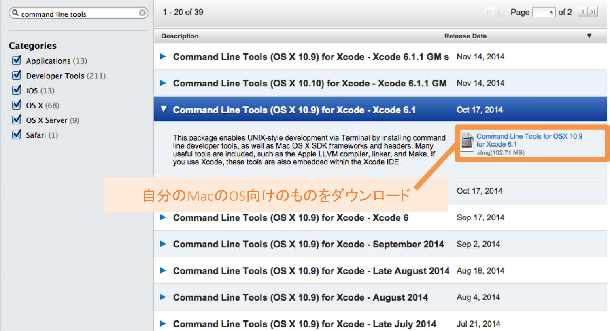

本章では、Ruby on Railsによる開発を行うための環境を構築します。
本章を進める上での注意点が3つあります。
以下のものを事前に準備しておいてください。
・Apple IDとパスワード
・PC本体のパスワード
Windowsユーザーの方はこの章で行う環境構築に関しては事前にvagrantを使って実行済みです。
そのためこの章は飛ばし、次の「はじめに」の章から再開をお願いします。
以下に紹介する手順を順番に実行してください。
まず、Homebrewというアプリケーションをインストールするのに必要なコマンドを使えるようにするため、Command Line Toolsというものをインストールします。
①以下のリンク先にアクセスしてください。
②アクセスするとまずApple IDとそのパスワードを要求されるので、入力してください。
③登録が初めての場合はいくつかの質問項目があるので、それらに答えて先に進んでください。
④登録が済むと、以下の画面になります。ページ左上から「Command Line Tools」を検索してください。
⑤すると、以下のようになります。Command Line Tools(OSX 10.X)となっているもののうち、自分のMacのOSのバージョンに合わせたものをインストールしましょう。

MacのOSのバージョンは、画面左上のりんごマークをクリック→「このMacについて」から調べることができます。
このMacについて
バージョンの確認
以下の対応表に従ってインストールを進めてください。
対応表
x部分はどんな数字でも同じです。
また、該当するCommand Line Toolsが複数ある場合は上（最新）の物を選択してください。
| OS Xのバージョン | Command Line Tools |
|---|---|
| 10.10.x | Command Line Tools (OS X 10.10)for Xcode x.x.x |
| 10.9.x | Command Line Tools (OS X 10.9)for Xcode x.x.x |
| 10.8.x | Command Line Tools (OS X Mountain Lion)for Xcode x.x.x |
| 10.7.x | Command Line Tools (OS X Lion)for Xcode x.x.x |
⑥ダウンロードしたCommand Line Toolsをインストールしてください。
以上です。
以降は、基本的にはコマンドをターミナルからホームディレクトリ上で実行していくだけです。
以下の手順を見ながら、2.~20.までの【実行するコマンド】で示されているコマンドを１つずつ実行していってください。
1 2 3 |
$ cd #ホームディレクトリに移動
$ pwd #ホームディレクトリにいるかどうか確認
$ ruby -e "$(curl -fsSL https://raw.githubusercontent.com/Homebrew/install/master/install)" #コマンドを実行
|
※処理に時間がかかる可能性のあるコマンドです。
Homebrewというアプリケーションをインストールするためのコマンドです。ターミナルを起動し、cd コマンドでホームディレクトリに移動してからコマンドを入力、実行してください。
すると、以下のようにパスワードを要求されます。
また Press RETURN to continue or any other key to abort と表示された行の後は、エンターキーを押してください。その後Passwordを入力する画面になります。何も入力がないとタイムアウトしてしまいパスワード入力の行まで進めません。
このパスワードは、ご自身のMacのパスワードです。
ターミナル上でパスワードを入力しても文字は表示されません。ですがちゃんと入力はされているので、打ち終わったらエンターキーを押してください。
その後、以下の画像の下部のように％表示がされ、再びコマンドを入力できるようになれば成功です。

Homebrewは、Mac OS上でのソフトウェア管理を行うソフトウェアのことです。これを使うことで、インターネット上から便利なアプリケーションを簡単にインストールしたり、そのバージョン管理をすることができます。
これからいくつかのアプリケーションをインストールするのですが、その管理のためにHomebrewをインストールします。
1 |
$ brew -v
|
Homebrewがインストールされているかを確認します。以下のように、Homebrewのバージョン情報が表示されれば無事にインストールされています。
1 2 |
$ brew -v
Homebrew 0.9.5
|
1 |
$ brew update
|
Homebrewを最新バージョンにするためのコマンドです。バージョンが既に最新である場合もあります。
Macのバージョンが10.11.1以上の方は、ターミナルから以下のコマンドを実行してください。バージョンは、ウィンドウ左上のリンゴマークをクリックし、「この Mac について」を押すと調べることができます。
1 |
$ sudo chown -R \`whoami\`:admin /usr/local/bin
|
1 |
$ brew install rbenv ruby-build
|
Homebrewを使って、rbenv, ruby-buildという2種類のアプリケーションをインストールするためのコマンドです。
実行すると、以下のようになります。
rbenvとruby-buildは、Rubyのバージョンを管理する際に組み合わせて使います。
ruby-buildによってRubyの様々なバージョン(2.0.0など)をインストールし、rbenvを使ってそれらを切り替えます。
なぜバージョンを切り替える必要があるのかというと、開発環境によってはRubyの特定のバージョンでなければエラーが出てしまうことがあるためです。
1 |
$ echo 'eval "$(rbenv init -)"' >> ~/.bash_profile
|
パスを通すことで、rbenvをどのディレクトリからも使用できるようにします。実行すると、すぐコマンド入力画面になります。
本来アプリケーションを利用するためにはそのアプリケーションの存在するディレクトリまで移動しなくてはいけません。
しかし、設定ファイルにコードを書き設定することで、どのディレクトリからもアプリケーションを呼び出せるようになります。
このことを「パスを通す」と言います。
1 |
$ source ~/.bash_profile
|
書き込んだ設定を読み込み、有効にします。
ターミナルのirb上で日本語入力を可能にする設定を行います。
1 |
$ brew install readline
|
パスを通すことでreadlineをどのディレクトリからでも使用できるようになります。
1 |
$ brew link readline --force
|
1 2 |
$ RUBY_CONFIGURE_OPTS="--with-readline-dir=$(brew --prefix readline)"
$ rbenv install 2.1.3
|
※処理に時間がかかる可能性のあるコマンドです。
TECH::CAMPでの開発に使用していただく、Rubyの2.1.3バージョンをインストールします。
実行すると、以下のようにインストールが開始され、終わるとコマンド入力画面になります。
Macに最初から入っているRubyは、先ほどインストールしたrbenvでのバージョン管理ができません。
そのため、ruby-buildとrbenvを組み合わせてバージョン管理のできるRubyをインストールする必要があります。
1 |
$ rbenv rehash
|
rbenv rehashコマンドに関しては本章の最後の方で詳しく説明します。
rbenv rehashコマンドを実行した後すぐにコマンド入力画面に戻れば、正常に完了しています。
1 |
$ rbenv global 2.1.3
|
rbenv global コマンドは、そのPCの全ての開発環境で利用するRubyのバージョンを決めることができます。
1 |
$ ruby -v
|
Rubyのバージョンが、12. で設定した2.1.3であることが表示されればOKです。
1 |
$ brew install homebrew/versions/mysql56
|
※処理に時間がかかる可能性のあるコマンドです。
MySQLをインストールするコマンドです。
（本来brew install mysqlとだけ入力しますが、現在最新のバージョンであるMySQL5.7系をインストールすると問題が起きるため、今回はバージョンを指定した方法でインストールします。）
実行すると以下のようになります。
MySQLとは、データを保存するデーターベースサーバーの一種です。Ruby on Railsで作るアプリケーションで使用するデータを保存するために利用します。
1 |
$ ln -sfv /usr/local/opt/mysql56/*.plist ~/Library/LaunchAgents
|
MySQLを自動で起動するためのコマンドです。
MySQLは、使用時に起動されてなくてはいけません。PCの電源を落とすとMySQLも終了し、再度手動で起動する必要があります。
これは面倒なので、PCを起動すると同時にMySQLも自動で起動する設定にしておきます。
1 |
$ launchctl load ~/Library/LaunchAgents/homebrew.mxcl.mysql56.plist
|
1 |
$ gem install bundler
|
bundlerをインストールするためのコマンドです。実行すると以下のようになります。
gemとは、Rubyを便利に扱うためのアプリケーションの総称です。ターミナルからそれぞれのgemが持つコマンドを実行するという形で使用します。
bundlerとはgemのバージョン管理などをしてくれるgemです。
環境ごとに使用するgemを決めたり、gemのバージョンを指定したりできます。
1 |
$ gem install rails
|
※処理に時間がかかるコマンドです。
Ruby on Rails(以下、Rails)に付随する様々なgemをインストールするためのコマンドです。Railsも、実はRubyのgemの一つです。上記のようなgemコマンドでインストールすることができます。実行すると、railsとそれに付随する様々なgemがインストールされていきます。
ここではインストールするものが多いので、しばらく時間がかかります。
1 |
$ rbenv rehash
|
gemは、各Rubyのバージョンごとに個別に保管されます。
rbenv rehashコマンドは、そのバージョンで利用しているgemのコマンドを使えるようにするために必要なコマンドです。
gemコマンドでgemをインストールしたときは、rbenv rehashコマンドを実行するのを忘れないようにしましょう。
1 |
$ rails -v
|
railsのバージョンを確認するためのコマンドです。
もしもRailsが無事にインストールされていれば、ターミナルにバージョン情報が表示されるはずです。
以上で、Ruby on Railsを利用した開発のための環境構築は終了です。
お疲れ様でした！
お疲れ様でした！このカリキュラムの終わりに確認問題を解きましょう。
 大宅 誠人
大宅 誠人